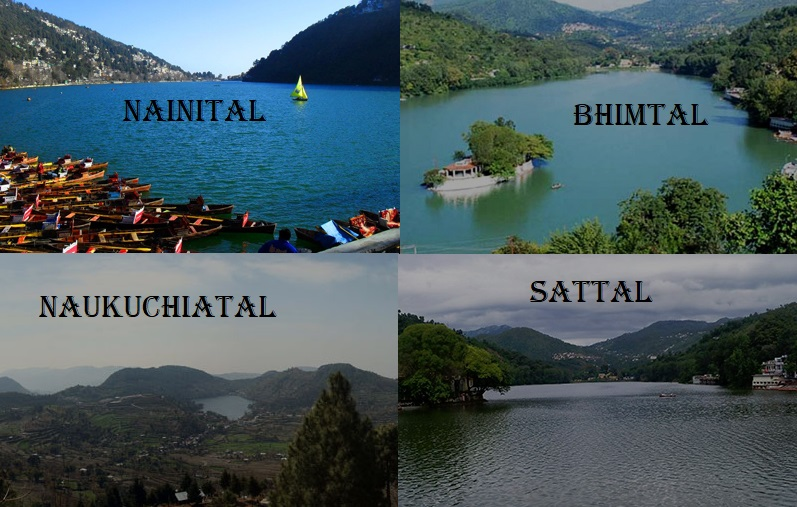
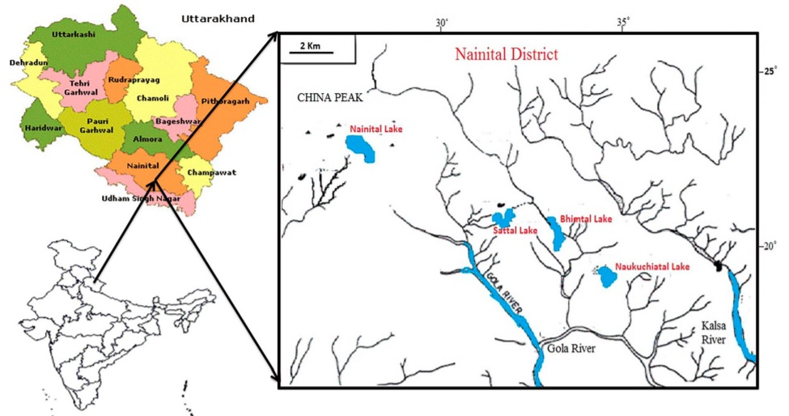
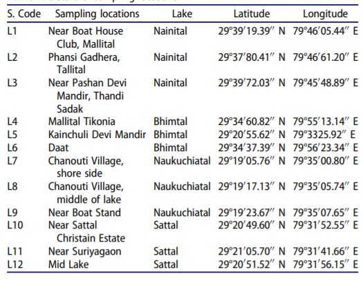
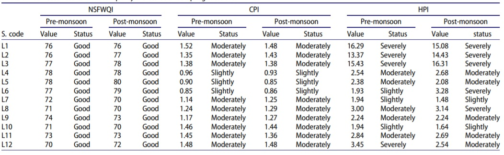

Created By Deepta Bharadwaj and Spoorti Giridhar
Uttarakhand

Uttarakhand - Index to measure Lake Quality



Indicies used to Measure Quality
NSFWQI - National Sanitation Foundation Water Quality Index CPI - Comprehensive Pollution Index HPI- Heavy metal Pollution Index
Reference: https://www.researchgate.net/publication/320574722_Appraisal_of_Water_Quality_in_the_Lakes_of_Nainital_District_through_Numerical_Indices_and_Multivariate_Statistics_India